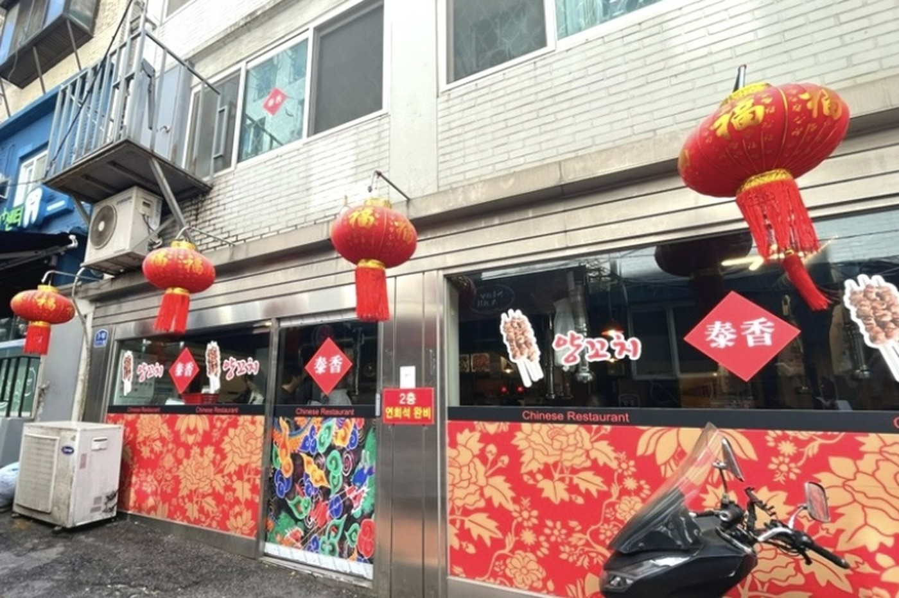
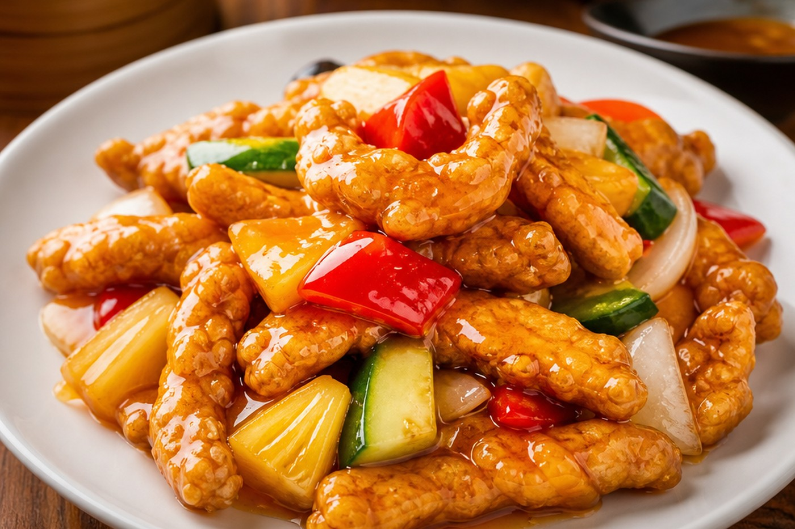
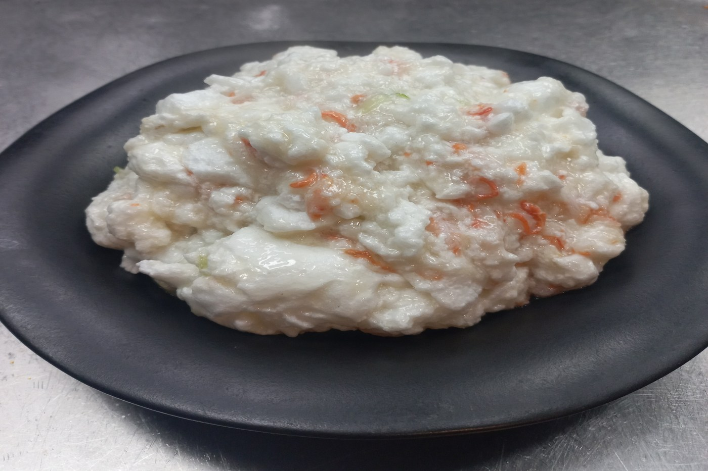
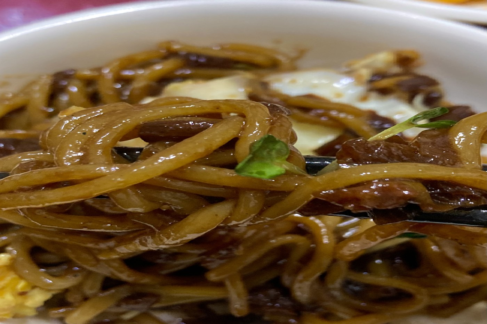
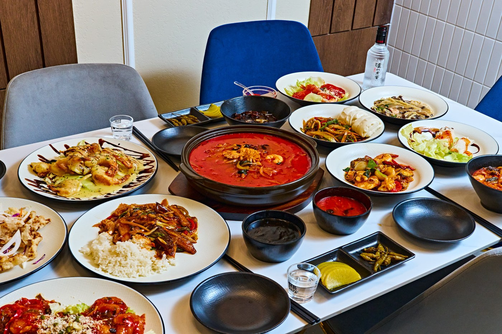
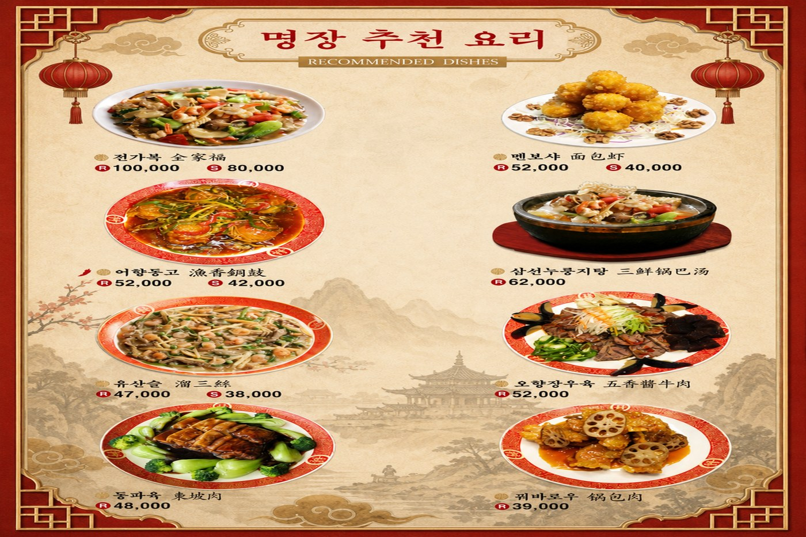
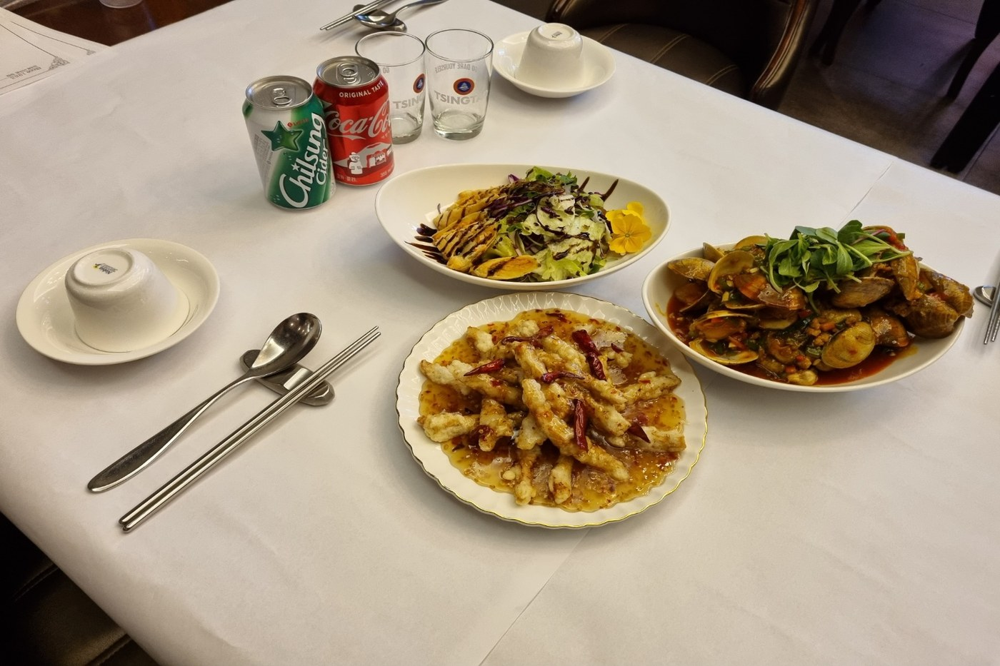
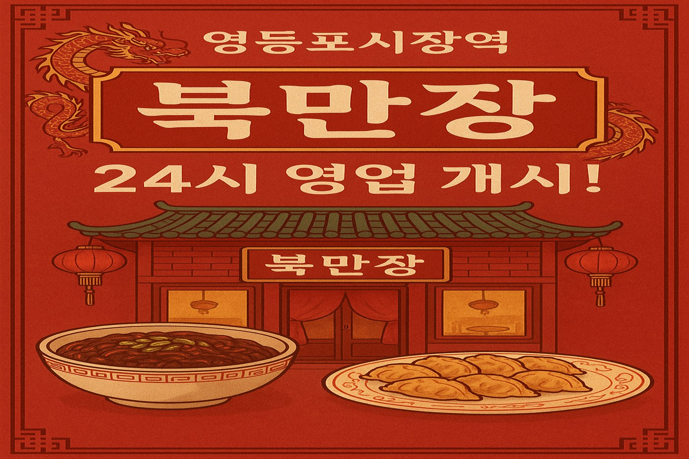
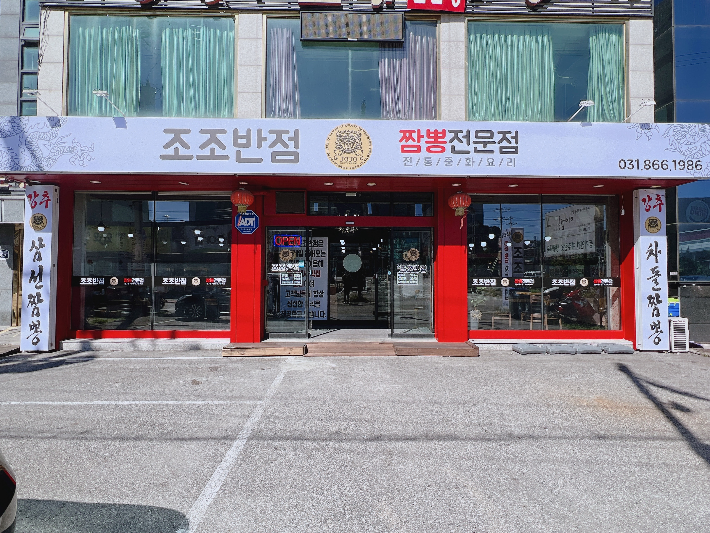

태향
태향특면

한국식 중국요리(중화요리)는 짜장면·짬뽕·탕수육처럼 한국에서 발전한 중식 메뉴를 말합니다. 배달·동네 중식당부터 오래된 노포까지 폭넓게 찾을 수 있고, 관광객에게도 익숙한 맛으로 인기가 많습니다.
아래 추천 가게(상호)를 눌러 자세히 보세요.

태향특면

탕수육

사천짜장

이 코스(2인이상)

명장 추천 요리

전가복 S

유니짜장

탕수육